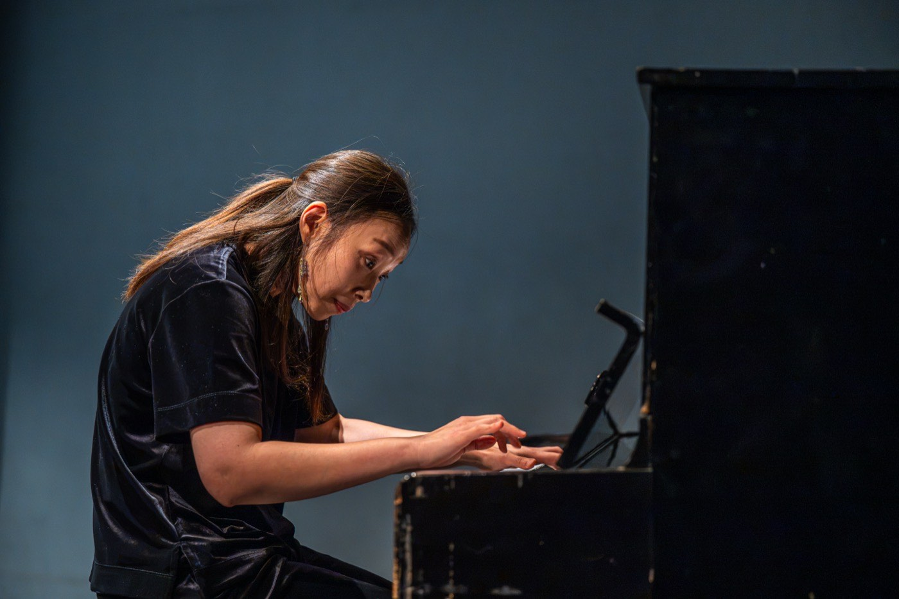
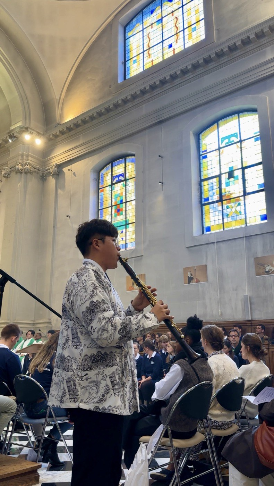
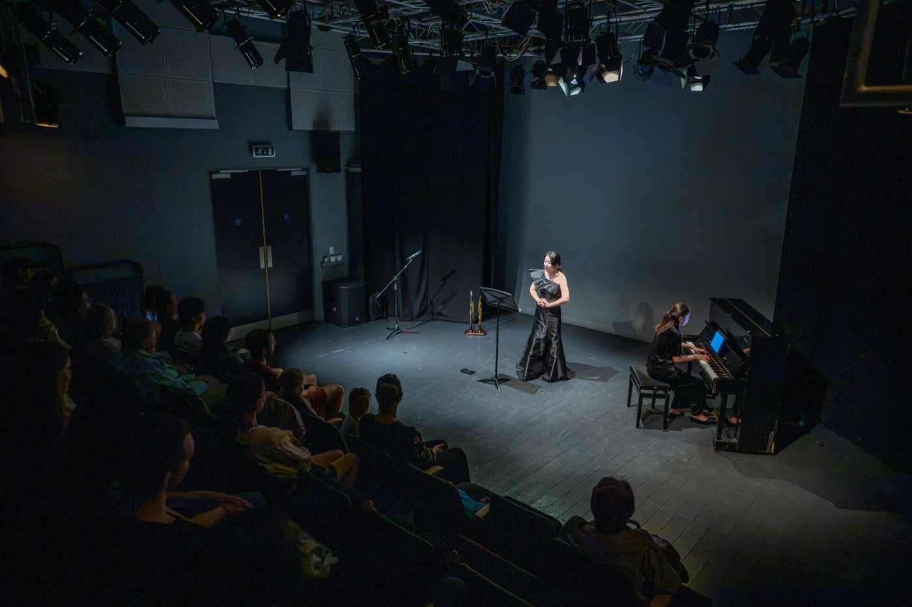
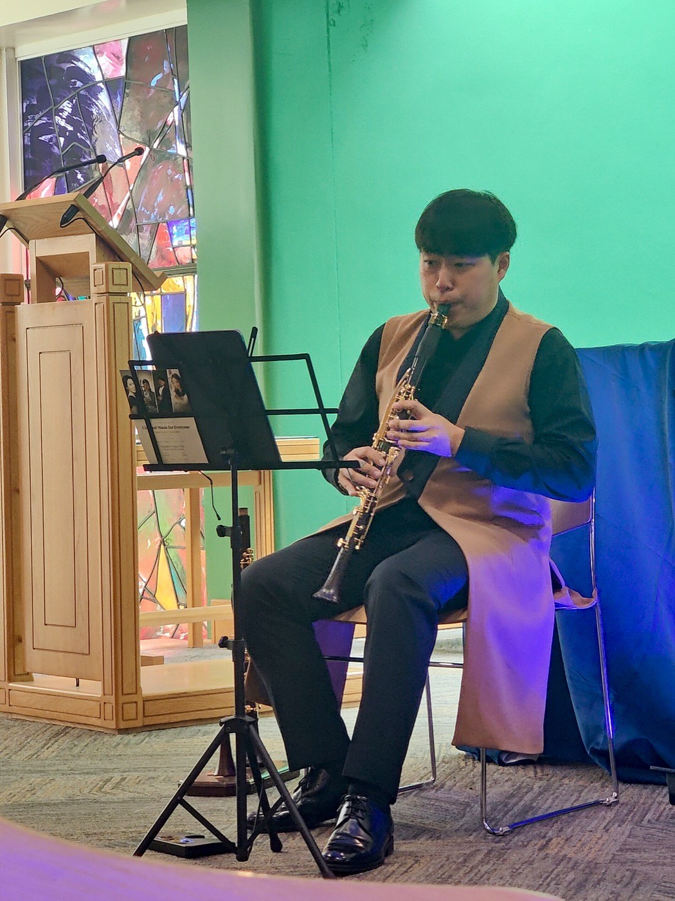
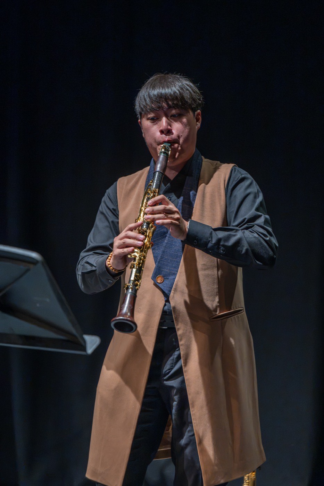
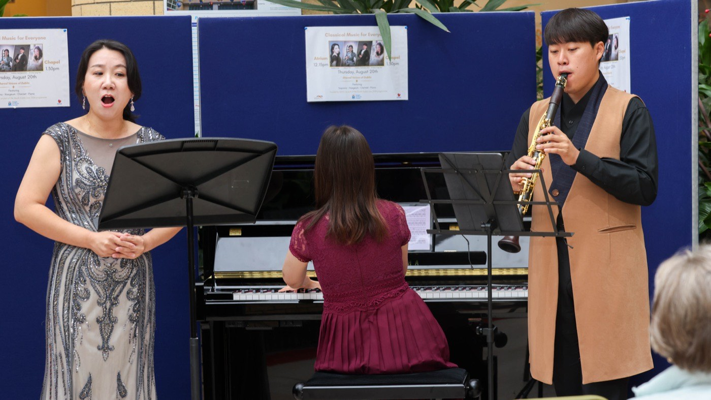
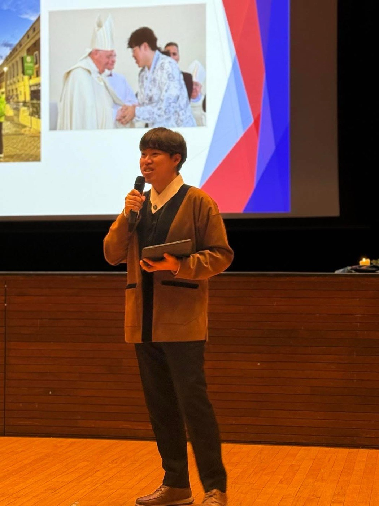
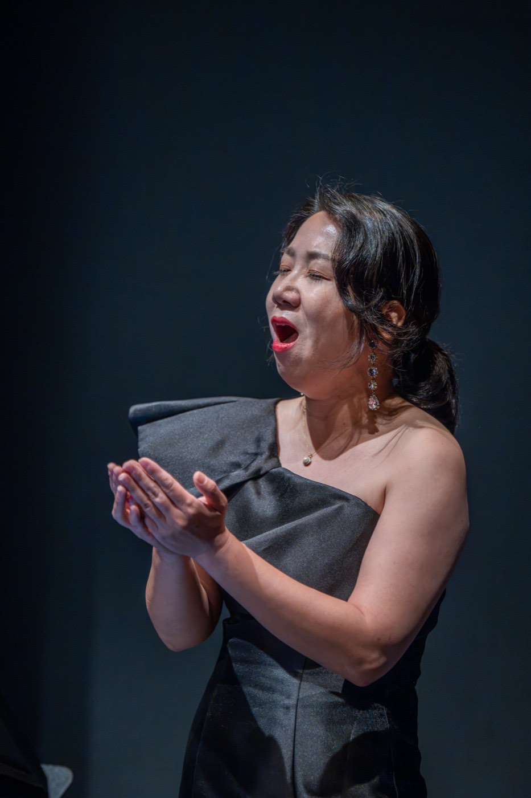
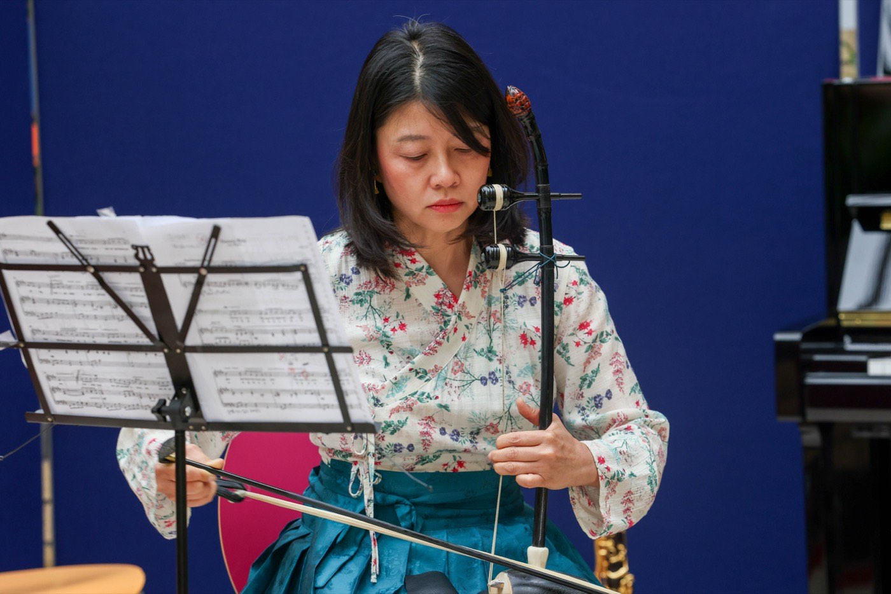
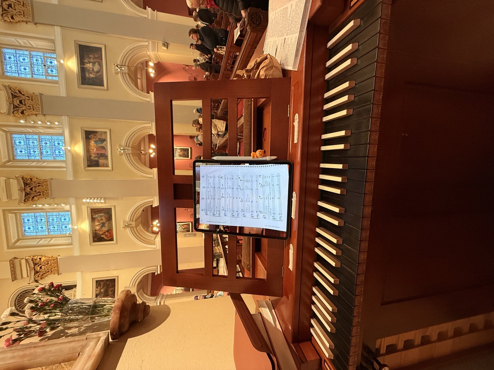

피아노
안수정
RIAM 음악박사(2022). 제58회 마리아 카날스 국제콩쿠르 1위.

창립자
클라리네티스트, 오르가니스트, 커뮤니티 음악 실천가. Classical Music for Everyone과 Letters Ensemble의 창립자. 더블린.
“사람들이 음악에 오기를 기다리는 대신, 음악이 사람들에게 갑니다.”
일하는 방식
리코더 수업의 강사, 강의·연주의 진행자, 동행을 예약하는 사람, 요양시설에서 클라리넷을 부는 연주자, 그 자리에서 앙상블을 지휘하는 사람이 같은 한 사람입니다.
이건 설명인 동시에 한계입니다. 주당 50회 대신 다섯 개 프로그램인 이유가 여기 있고, 음악교육자를 제대로 고용하는 일을 두 번째 사회적 목표로 못 박아 둔 이유도 같습니다. 이 일은 한 사람 위에서 커지지 않고, 커져서도 안 됩니다.
무대 위, 2026년 8월





이 실천이 나온 곳
2022년부터 더블린의 두 본당에서 매주 연주해 왔습니다. 성주간 전례, 학교 미사와 위령 미사, 장례, 본당 음악회. 본당과 수도 공동체에는 이 일을 음악을 통한 평신도 사도직으로 설명합니다. 그 자리에 함께 있어 주는 봉사라는 뜻입니다. 커뮤니티 활동과 같은 일을, 물어보신 분들의 말로 옮긴 것입니다.
졸업 연구는 워렌마운트의 은퇴 프레젠테이션 수녀 일곱 분을 위해 직접 설계하고 이끈 10주 리코더 앙상블이었습니다. 일곱 분 모두 마치고 사람들 앞에서 연주했습니다. 지금의 교육 프로그램 전체가 그 위에 서 있습니다.
“음악으로, 그는 홀로 남았을 이들에게 격려와 존엄과 영적인 동행을 건넵니다.”
더블린 보좌주교 도날 로치 · 2026년 2월 16일함께 연주하는 예술가

RIAM 음악박사(2022). 제58회 마리아 카날스 국제콩쿠르 1위.

신라대학교, 로마 산타 체칠리아 국립음악원.

Shared Voices of Care와 An Autumn Concert(2026) 객원.
Rua Red 사진: Ben Ryan / South Dublin County Council. 병원 사진: Tallaght University Hospital.
기록
포르투갈과 이탈리아는 자원봉사를 간 곳입니다. 저희가 적는 ‘4개국’은 연주한 나라만 셉니다.
